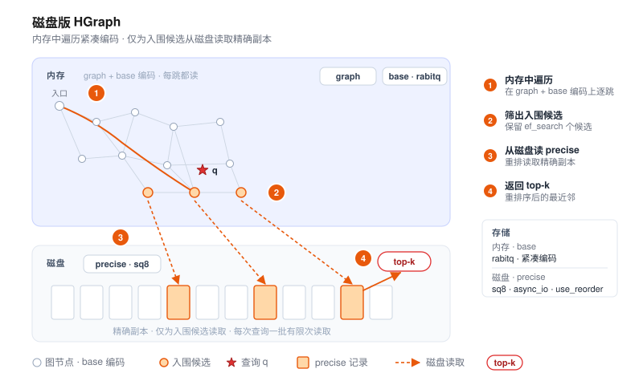

磁盘索引最佳实践

当数据规模增长到内存放不下全量向量时，把最冷、最大的那部分索引下沉到 SSD，是控制成本最直接的 手段。VSAG 让索引的每个部分各自选择存储后端，从而实现热数据留内存、冷数据从磁盘读取。本文介绍 HGraph + 磁盘 IO，给出可直接复制的配置、容量模型与调优 清单。
这里的“磁盘索引”指把索引数据分层存放在内存与磁盘之间，与“向量 + 标量属性”的混合检索无关； 后者请参见属性过滤（混合搜索）。
什么时候该上磁盘
数据规模大并不必然要上磁盘。先用下面几个信号判断：
| 信号 | 纯内存即可 | 考虑磁盘 |
|---|---|---|
| 数据规模 | 千万级及以内 | 亿级 / 十亿级 |
全量 fp32 是否放得下内存 | 放得下 | 放不下 |
| 延迟预算 | 亚毫秒、极敏感 | 几毫秒～十几毫秒可接受 |
| 成本结构 | 内存成本可接受 | 希望用 SSD 替换大部分内存 |
一个快速的内存估算：全量 fp32 副本约占用 N × dim × 4 字节。例如 1e9 × 128 × 4 ≈ 512 GB、
1e8 × 768 × 4 ≈ 307 GB——这类规模在单机内存里几乎放不下，正是磁盘索引的目标场景。
磁盘路线的代价是每次查询会引入若干次随机读 I/O，因此延迟会高于纯内存索引。如果你的服务要求 亚毫秒级延迟且数据能压缩进内存，优先考虑纯内存的 HGraph + 量化。
核心思想
VSAG 的磁盘路线遵循同一原则：内存放小而近似的表示用于导航，磁盘放大而精确的表示用于 排序。 图遍历只访问内存中的近似量化码；随后仅对少量入围候选，用从磁盘读回的 精确副本做重排（reorder）。由于磁盘读取只发生在最后、且只针对少量候选，I/O 成本被限制在很小 范围，而召回则由精确重排补回。
HGraph 如何分层存储
HGraph 把一个索引拆成若干个相互独立的 cell（数据单元），每个 cell 都能单独指向自己的 IO 后端。这正是“热数据在内存、冷数据在磁盘”的实现基础：
| Cell | 存放内容 | 访问模式 | 建议放置 |
|---|---|---|---|
graph | 邻近图的邻接表 | 每一跳都读 | 内存（内存紧张时可用 mmap_io） |
base | 用于遍历和剪枝的量化码 | 每一跳都读 | 内存 |
precise | 用于重排的高精度副本（use_reorder） | 只为少量入围候选读取 | 磁盘 |
raw_vector | 可选的原始向量（store_raw_vector） | 很少访问，如 cosine / 精确计算 | 内存或磁盘 |
可分配给 cell 的 IO 后端：
后端（*_io_type） | 位置 | 是否需要 *_file_path | 说明 |
|---|---|---|---|
memory_io | 内存（连续） | 否 | 基础内存存储 |
block_memory_io | 内存（分块分配） | 否 | 大 cell 的默认后端 |
buffer_io | 磁盘（带缓冲 pread） | 是 | 通用磁盘读取，各平台可用 |
mmap_io | 磁盘（mmap + 页缓存） | 是 | 工作集能放入页缓存时接近内存速度 |
async_io | 磁盘（Linux libaio） | 是 | 高并发磁盘读；仅限 Linux + libaio，否则回退 buffer_io |
reader_io | 自定义 Reader | 否 | 加载期通过用户 ReaderSet 读取（如远程 / 对象存储） |
每个 cell 通过一组扁平参数配置：graph_io_type / graph_file_path、base_io_type /
base_file_path、precise_io_type / precise_file_path，以及 raw_vector_io_type /
raw_vector_file_path。当对应的 *_io_type 为磁盘型（buffer_io、mmap_io、async_io）时，
*_file_path 必填；内存型后端会忽略它。所有 cell 默认均为 block_memory_io（全内存）。
推荐配置：base 留内存，precise 落磁盘
最常用的分层方案：内存里保留极为紧凑的 3 位 RaBitQ base 用于遍历，把精度更高的 sq8 副本下沉磁盘，
并开启 use_reorder，让入围候选用它重排：
{
"dtype": "float32",
"metric_type": "l2",
"dim": 128,
"index_param": {
"base_quantization_type": "rabitq",
"rabitq_bits_per_dim_base": 3,
"max_degree": 32,
"ef_construction": 400,
"use_reorder": true,
"precise_quantization_type": "sq8",
"precise_io_type": "async_io",
"precise_file_path": "/data/vsag/hgraph_precise.data"
}
}
其中 rabitq_bits_per_dim_base 选择标准多 bit RaBitQ 的 base 编码位数（范围 [1, 8]）；不要设置
rabitq_bits_per_dim_precise，以保持 base 为普通 RaBitQ 编码，而非切换到 x+y split 变体。
搜索方式不变——照常设置 ef_search，重排会透明地从磁盘读取精确副本：
{"hgraph": {"ef_search": 200}}
单次查询的数据流：图遍历只读内存中的 base 量化码与 graph 邻接表；磁盘 I/O 仅发生在最后，
由重排为少量候选读取精确副本，然后返回 top-k。这正是磁盘 HGraph 每次查询只增加有限次读取、
而非每跳一次读取的原因。
硬件与部署
- 使用 NVMe SSD。 磁盘向量检索的瓶颈在随机读延迟；NVMe 比 SATA SSD 低一个数量级，对
async_io/mmap_io是必需的。 async_io需要 Linux + libaio，且默认开启。 CMake 选项ENABLE_LIBAIO默认为ON， Makefile 也会自动传入VSAG_ENABLE_LIBAIO=ON；只有当此前的构建关闭过 libaio 时，才需要用这些 开关把它重新打开。当 libaio 缺失时（包括 macOS），async_io会打印一次性告警并回退buffer_io，配置因此保持可移植但失去异步批量能力。生产吞吐场景请在 Linux 上编译进 libaio。- 预热页缓存。 对
mmap_io的 cell，加载后先做一次预热（如顺序读一遍文件、或跑一轮预热 查询），避免最初的查询承担冷未命中延迟。 - 规划文件路径与生命周期。 磁盘型 cell 会写入你提供的
*_file_path；请放在快速、专用、 容量足够的卷上，并在重建时清理陈旧文件。索引的序列化与加载走常规 序列化格式 API，后端文件随之管理。
容量规划
主要量化器的每向量近似存储（另加少量每向量元数据，如范数与误差）：
| 表示 | 每向量字节数 | 典型放置 |
|---|---|---|
fp32（精确） | dim × 4 | 磁盘 |
fp16 / bf16 | dim × 2 | 内存或磁盘 |
sq8 | dim × 1 | 内存或磁盘 |
sq4 | dim × 0.5 | 内存 |
rabitq（b 位） | dim × b / 8 | 内存 |
以 N = 1e9、dim = 128 为例：
- 内存中的 3 位
rabitqbase：1e9 × 128 × 3 / 8 ≈ 48 GB内存。 - 磁盘上的
sq8精确副本：1e9 × 128 × 1 ≈ 128 GBSSD。 - 若改用全精度
fp32（重排精度最高）：1e9 × 128 × 4 ≈ 512 GBSSD。 - 再加上图：邻居 id 约
N × max_degree × 4字节（内存或mmap_io）。
这就是一个若以纯 fp32 需要约 0.5 TB 内存的十亿级索引，如何被压缩到几十 GB 内存 + 一块 SSD。
调优与排错
| 现象 | 可能原因 | 处理 |
|---|---|---|
| 召回过低 | base 量化过粗，或未开启重排 | 保持 use_reorder: true；将 precise_quantization_type 提升至 fp32；增大 ef_search |
| 延迟过高 | 每次查询磁盘读取过多 | 降低 ef_search；把 graph/base 留内存；仅让 precise 落磁盘；用 NVMe + async_io |
| 内存仍然偏高 | base 或 graph 过大 | 把 base 改为 sq4 / pq / rabitq；把 graph 放到 mmap_io |
async_io 表现为同步 | 未编译 libaio | 在 Linux 上以 VSAG_ENABLE_LIBAIO=ON 重新编译；留意回退告警 |
| 冷启动延迟抖动（mmap） | 页缓存未预热 | 加载后、对外服务前先预热文件 |
以上仅为起点，请用 eval_performance 在真实查询分布上验证；随后可用
优化器 自动确定搜索期参数。